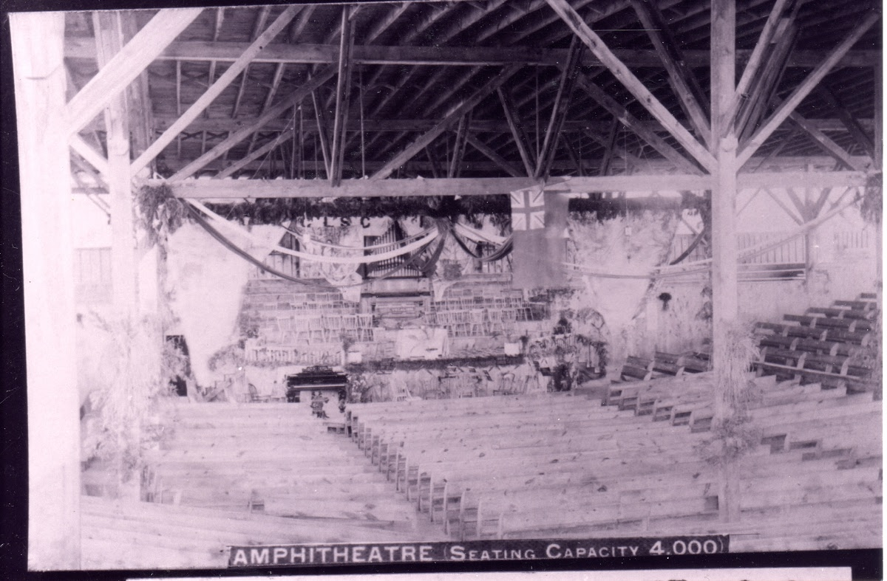
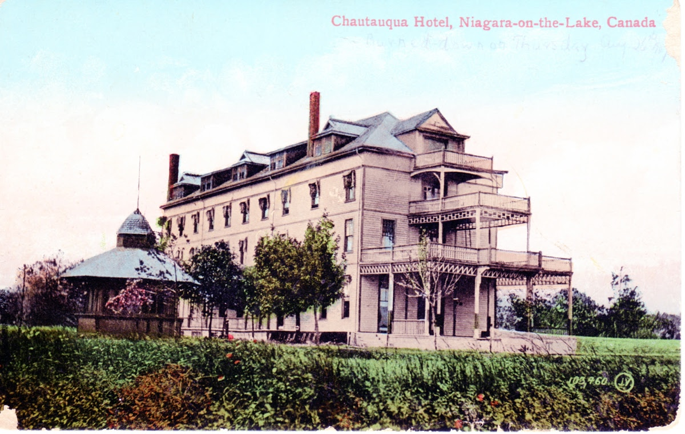
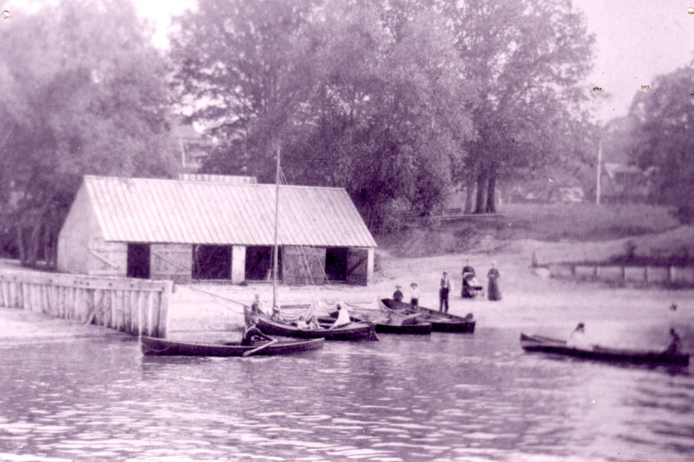
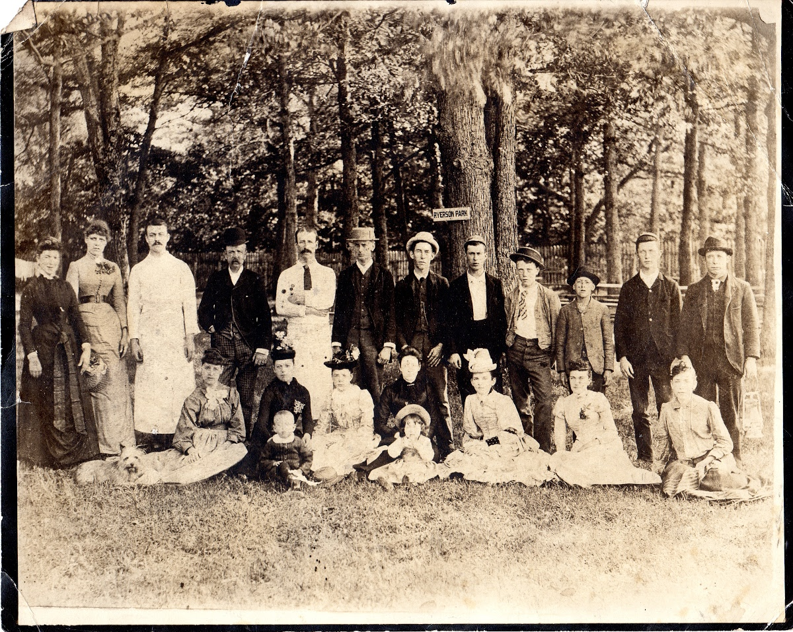
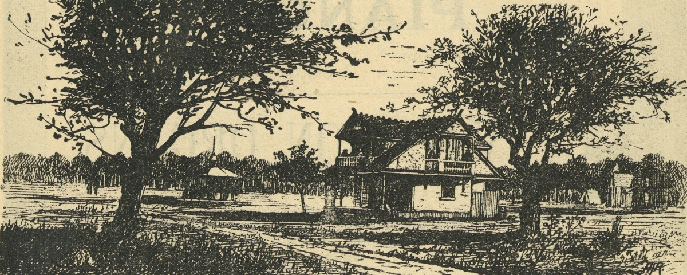

Before the wheel
The land before the wheel
Before it was a wheel of streets, this was a merchant's estate on the point where a creek meets the lake, in a young country whose border was still being drawn. It belonged to the Crooks family, Scottish traders who built a business straddling the Niagara. The half-brother Francis opened a house at Fort Niagara around 1788, and when that post passed to the United States the family crossed to the Canadian bank as the firm W. & J. Crooks. On the point, James Crooks built a brick house and named his estate Crookston. That estate, all ninety-two acres of it, is the land the Chautauqua wheel would one day be laid out upon.
Then the border turned on them. To carry their trade the brothers had built a fine schooner, the Lord Nelson. On 9 June 1812, nine days before the United States declared war, the U.S. Navy seized her on the lake on an unproven charge of smuggling.
Renamed the USS Scourge and turned against her own makers, she foundered in a night squall in 1813 with some eighty-four men. She still lies intact on the floor of Lake Ontario, a war grave and National Historic Site.
Free Trade, and Sailors' Rights.
The flag flown by the USS Scourge, once the Crooks family's Lord Nelson
The war came to the door. James Crooks fought as a militia captain at Queenston Heights; in the spring of 1813 the American bombardment that took the town razed Crookston to the ground. When peace came at Ghent, the family was ruined, and James left for the head of the lake to build Crooks' Hollow and Upper Canada's first paper mill. The burned point lay in his heirs' hands for seventy years.
A battlefield was about to become a meeting place.
The idea
A movement that swept the continent, and a wheel pressed into ninety-two acres of lakeshore
In 1874, on the shore of Lake Chautauqua in western New York, two Methodists, John Heyl Vincent and Lewis Miller, opened a summer camp to train Sunday-school teachers. It grew into something larger: an adult-education movement of lectures, music, science and self-improvement that rippled across North America, seeding hundreds of "daughter" assemblies.
One reached the shore of Lake Ontario, and, of all places, the very ground the war had burned. In the early 1880s, Robert Warren, the postmaster of Niagara, and a circle of Toronto men formed the Niagara Assembly, and in May 1886 they bought the ninety-two-acre point: James Crooks' ruined estate, quiet for seventy years. There they drew the most unusual plan in the region. Streets radiated like the spokes of a wheel from a single hub, where an open-timber amphitheatre would seat four thousand, and where the steamers would soon bring Americans back across the lake as guests.
- acres of lakeshore
- 92
- cottage lots, on 99-year leases
- ≈500
- seats in the amphitheatre
- 4,000
- years on, a wheel still turning
- 140+
The signature
The wheel of streets
Every avenue ran outward from Circle Street and the amphitheatre at its centre, and every avenue carried a name. Read together, they are a Victorian pantheon of reformers, poets, composers, scientists and statesmen, pressed into a street grid. Point at a spoke to meet its namesake, or read the full roster below.
The arc
From a seized schooner to Neighbourhood of the Year
Two centuries on one point of land: a family, a war, a resort, a fire, and the community that outlasted them all.
The grounds
What stood on the point
The Niagara Assembly's own photographs and prints, held today by the Niagara-on-the-Lake Museum, are nearly all that survives of the resort itself. Each image links to its source record.

The amphitheatre: the only known photograph
An open pavilion of exposed timber trusses over a steep bank of benches, dressed with garlands, a Union Jack, and the banner of the Chautauqua Literary & Scientific Circle. The printed plate is captioned "Amphitheatre (Seating Capacity 4,000)." For decades it was believed no photograph survived; this one does.
NOTL Museum / Google Arts & Culture
Hotel Chautauqua
Built 1887 by One Mile Pond, with electric light, telephone, telegraph, baths and a grand dining room. Renamed the Strathcona after 1894.
NOTL Museum / Google Arts & Culture
Ryerson Park & the bath house
The lakefront green ran along Lake Ontario, with a sandy bathing beach, the Boat & Bath Houses, and rowboats for hire.
NOTL Museum / Google Arts & Culture
A gathering at Ryerson Park, c. 1890
Unknown visitors beneath the trees, enjoying the social life the assembly was built for: lectures by day, concerts by evening, croquet and bowls between.
NOTL Museum / Google Arts & Culture
The grounds engraved, Season of 1888
From the assembly's own programme: a cottage, a pavilion and canvas tents. The resort began as "dozens of tents on the old Crooks farm" before the cottages rose.
NOTL Museum / Google Arts & CultureThe characters, part one
Those who drew the wheel
The Assembly's directors, named on its own survey plan, were a roster of Methodist clergy, educators and Toronto men of affairs, several of them nationally consequential far beyond this lakeshore.
The season
Eleven days of June, and a steamer from Buffalo
The assembly opened in mid-June and ran eleven or twelve days. By day there were classes in English, history, political science, music, art and botany; by evening, concerts and divine service under the amphitheatre's trusses. Between them: tennis, lawn bowls, croquet, baseball, golf and the sandy beach. A season ticket cost one dollar; a single day, ten cents.
They came by water and rail. The side-wheel steamers Chicora and Cibola ran Toronto–Niagara–Lewiston; Michigan Central trains drew up at a spur off John Street. And across the lake, Buffalo took the place to heart: the New York Central advertised excursion trains "to the Canadian Chautauqua," and church Sunday-schools made it their annual picnic.
The Canadian Chautauqua opened June 14th… and will continue 12 days.
Lockport Daily Journal, 16 June 1890
To the Canadian Chautauqua — in view of the wide-spread attention now centered on it.
Buffalo Evening News, excursion notice, 23 July 1890
Visitors at the Canadian Chautauqua… the town and all its tributary country.
Buffalo Evening News, 14 August 1896
27 August 1909
Ten minutes
The resort had already faltered: too few beds, too slow a trade in lots, a semi-religious tone that drew smaller crowds than hoped, all against a long international depression. In 1894 the Niagara Assembly went bankrupt; a successor, the Niagara Syndicate, ran the hotel on as the Strathcona.
Then, at twenty past three on an August afternoon, fishermen saw smoke climbing from the hotel basement. Within ten minutes the frame building was gone. Guests fled half-dressed; some leapt from the balconies; neighbours took them in. The fire, it was said, began with a lamp a young woman had been using to curl her hair. The owners did not rebuild.
And that could have been the end of it. It was not. The hotel was gone, but the wheel of streets, the lots, the cottages and the young oaks all remained. The resort was over; the neighbourhood was only beginning.
The second life
The wheel outlives the resort
In 1922 the Mississauga Land Beach Company subdivided what was left and sold the last lots; when it faltered, the Town took much of the land for unpaid taxes and sold it on. Piece by piece, the old assembly grounds became a summer-cottage community of modest one- and one-and-a-half-storey cottages, often unwinterized, lived in for a few weeks and rented the rest of the season. That hundred-year rental tradition still shapes the streetscape today.
Over the later twentieth century the cottages were winterized and the neighbourhood turned year-round, yet it kept its curb-free, footpath streets and its canopy. When the Shaw Festival rose nearby from 1962, so many of its actors, designers and crew settled in the affordable cottages that the neighbourhood earned a second, fonder name: "SHAWtauqua." For a small place, it has quietly housed some of Canadian theatre's best-known faces.
The living thread
A canopy older than the resort
Chautauqua's most beloved feature is its trees, a green vault residents call the Cathedral of the Everyday. At its heart stand 166 mature oaks, all of a similar age, that self-seeded on the abandoned Crooks farm just after the War of 1812. They are older than the resort and older than the wheel, a living link to the battle that razed the estate in 1813.
By 2016 they were vanishing faster than they could replace themselves; only twelve young oaks were coming up. So two neighbours, the scenic designer Leslie Frankish and Holmes Hooke, began, after an over-the-fence conversation, to catalogue every tree and act. With Niagara College's School of Horticulture they grew new oaks from the acorns of the 166 originals, and by 2023 had planted 172 next-generation oaks across the neighbourhood, plus more than 500 trees gifted across greater Niagara-on-the-Lake.
When self-seeding, they had a tendency to plant themselves in twos and threes, remarkably close together… they evoke a sociable relationship, a charming indication that our neighbourhood is a friendly place — a unifying protective embrace.
Leslie Frankish, on the heritage oaks · Niagara-on-the-Lake Local, 2023
The characters, part two
Those who keep it turning
The resort's founders drew the wheel; a century of volunteers has kept it alive. Chautauqua today runs on its neighbours.
The Residents' Association
Founded in 1952, older than the Shaw Festival, the volunteer Chautauqua Residents' Association advocates with the Town, runs neighbourhood socials, and since 2024 has hosted the free Art & Garden Tour, opening ten gardens and studios. "Historically," notes president Weston Miller, "Chautauqua was a very artistic community."
Friends of One Mile Creek
Since 2003, this group of neighbours has restored the creek that drains the wheel's western edge: a 2005 watershed plan, years of clean-ups and native plantings, and, with the Town and Parks Canada, hundreds of new shrubs and trees to replace an emerald-ash-borer loss.
Guardians of the canopy
The Chautauqua Oaks Project and the Town's Community Tree Plan protect the green vault; a community-funded plaque, unveiled at Chautauqua Park in 2025, honours the volunteers who planted a forest for a century they will never see.
Today
Neighbourhood of the Year
In 2026, in the very first year of the honour, the Town of Niagara-on-the-Lake named Chautauqua its Neighbourhood of the Year, and threw a community party in the park to celebrate. A point of land the Americans once burned became a neighbourhood that, two centuries later, its own town singled out as the place that best embodies belonging and connection.
The amphitheatre is gone; the wheel remains. Circle Street still holds the centre, the avenues still run outward like spokes, and beneath them the great-great-grandchildren of the 1812 oaks are taking root. Come and walk it: stay in one of the old cottages, tour the gardens in June, and find, a mile from where the Niagara River meets the lake, a place that never stopped growing.
The wheel is still turning.